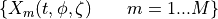
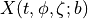
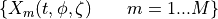
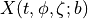

Examples aerosols-psd¶
Lognormal distribution¶
There are several functions to manage particle size distributions of aerosols when the functional form follows a lognormal distribution.
If we describe the particle size distribution indicating,
that the number of particles with diameter between D and D+dD is n(D),
a lognormal distribution. Then there is a set of related distributions
with this number distribution describing the area, volume, mass distribution
with size. All of them are described by a value of mean  , plus an standard
deviation
, plus an standard
deviation  . These means are the number median diameter (nmd), the
surface median diameter (smd) and the mass median diameter (mmd), given one of these
typical diameters and , we can obtain all other diameters
and several properties of the families of distributions. For this
it is useful the functions are
. These means are the number median diameter (nmd), the
surface median diameter (smd) and the mass median diameter (mmd), given one of these
typical diameters and , we can obtain all other diameters
and several properties of the families of distributions. For this
it is useful the functions are lognormal.py. Here is how to show
these values given and mmd.
Two know more about lognormal distributions for aerosols [Hei94] [Gra17]. For aerosols and also particle distributions [Zen02] [CG13]
# =======================================================================
# Typical output
#
# A mode with sigma=1.8, mmd=1.e-6 metres, name='D1', density =2650 kg/m3
# and number concentration of 7e6.
> stats_lognormal_mode(1.8, 1e-6, 'D1', rhop=2650.0, n_conc=7.e6)
# we will have as output:
=========================================================================
*sigma = 1.8000e+00 | *mmd = 1.0000e-06 m |=> nmd = 3.5470e-07 m
|=> smd = 7.0787e-07 m | smd! = 7.0787e-07 m
reff_n = 8.4135e-07 | reff_v = 5.0000e-07 m | reff_m = 5.0000e-07 m
mmeand = 1.1886e-06 | nmoded = 2.5108e-07 m | d_avgm = 5.9557e-07 m
*n_conc = 7.0000e+06 | a_conc = 4.6456e-06 m | v_conc = 7.7427e-13 m
m_conc = 2.0518e-09
*before word means pre-defined, ! after word means 2nd method
all others without symbols mean calculated
==================================================================
Here is also implemented an object named lnmode that allows to define this
family of distributions related with an specific logormal mode. It shows
can reconstruct this object by using mmd or nmd.
# ======= EXAMPLE of how to use (piece of code, not in REPL)
#
# (1) Create/Define the object here a lnmode named lnD1
lnD1 = lnmode({'sigma': 1.8, 'mmd':1.e-6, 'n_conc':7e-6, 'rhop':2650.0, 'name':'D1'})
# (2) How the statistics information of this mode
lnD1.show()
# (3) Estimate the bin fractions for that distribution for mass distribution
print(lnD1.bin_fractions([0.001e-6,1.0e-6,2.e-6,3.e-6]))
# (4) Estimate the bin fractions for that distribution for number distribution
print(lnD1.bin_fractions([0.001e-6,1.0e-6,2.e-6,3.e-6]), kind='nmd')
Binning of modal emissions¶
Given one or more modes defined by a single lognormal or a multimodel lognormal, there are functions to recreate diagnostics given at modal-scheme on a bin-scheme.
If we have a diagnostic  for a set of modes,
 we want to estimate the diagnostic,
 with b a set of bins. Here we show an example for emissions
for a set of modes,
 we want to estimate the diagnostic,
 with b a set of bins. Here we show an example for emissions
# FULL EXAMPLE: Binning of emission fields of 4 dust modes of IPSL climate model.
a_sigma = np.array([1.8, 2.0, 1.9, 2.00]) # array of sigmas
a_mmd = np.array([1.0, 2.5, 7.0, 22.0]) # array of mass median diameter
a_mode = ['D1','CI','SI','D4'] # name of the 4 modes of dust.
new_bins = [0.0001, 0.2, 2.0, 3.6, 6.0, 12.0, 20.0, 30.0, 40.0, 100.0, 200.0, 300.0]
dic_fractions = {}
for sigma, mmd, mode in zip(a_sigma, a_mmd, a_mode):
fractions = ln.bin_fractions_lognormal(mmd, sigma, bins=new_bins)
dic_fractions[mode] = fractions
dic_varname = {'D1':'emidustD1','CI':'emidustCI', 'SI':'emidustSI','D4':'emidustD4'}
dic_ncnames = {
'D1':'emidustD1_AERmon_IPSL-LMDZORINCAv6-r1i1p1f1_gr_20090101-20141231.nc',
'CI':'emidustCI_AERmon_IPSL-LMDZORINCAv6-r1i1p1f1_gr_20090101-20141231.nc',
'SI':'emidustSI_AERmon_IPSL-LMDZORINCAv6-r1i1p1f1_gr_20090101-20141231.nc',
'D4':'emidustD4_AERmon_IPSL-LMDZORINCAv6-r1i1p1f1_gr_20090101-20141231.nc'
}
f_area = 'tests/area_grid.nc'
vararea = xr.open_dataset(f_area)['area']
test_emi = {'kind':'tendency', 'area':vararea, 'years':['2010','2011']}
ftestemi = open('check_emission_binning.txt', 'w')
dic_files = {'basedir': './tests',
'base_nc': dic_ncnames['D1'],
'base_var': 'emidustD1',
'newf_nc': 'emidust_BINNED.nc'}
create_netcdf_2D_bins(dic_fractions, dic_varname, dic_ncnames, a_mode, new_bins,
dic_files, 'emidust_bin', ftest=ftestemi, save=True,
test_info=test_emi)
# OUTPUT of check_emission_binning.txt ===================================
============== mode contributions ======================================
---- 2010 -----------------------
Contribution mode D1 : 97.58 |> accum = 97.58
Contribution mode CI : 715.22 |> accum = 812.80
Contribution mode SI : 5274.96 |> accum = 6087.76
Contribution mode D4 : 10673.08 |> accum = 16760.84
*Contribution ALL bins: 16759.97
---- 2011 -----------------------
Contribution mode D1 : 88.92 |> accum = 88.92
Contribution mode CI : 651.81 |> accum = 740.73
Contribution mode SI : 4807.24 |> accum = 5547.97
Contribution mode D4 : 9726.73 |> accum = 15274.70
*Contribution ALL bins: 15273.90
============== bins contributions =====================================
---- 2010 -----------------------
Contribution bin [ 0.0, 0.2] : 0.40 |> accum = 0.40
Contribution bin [ 0.2, 2.0] : 490.17 |> accum = 490.57
Contribution bin [ 2.0, 3.6] : 946.51 |> accum = 1437.08
Contribution bin [ 3.6, 6.0] : 1763.44 |> accum = 3200.52
Contribution bin [ 6.0, 12.0] : 3858.86 |> accum = 7059.37
Contribution bin [ 12.0, 20.0] : 3511.50 |> accum = 10570.87
Contribution bin [ 20.0, 30.0] : 2635.21 |> accum = 13206.08
Contribution bin [ 30.0, 40.0] : 1464.50 |> accum = 14670.57
Contribution bin [ 40.0, 100.0] : 1935.78 |> accum = 16606.36
Contribution bin [ 100.0, 200.0] : 146.74 |> accum = 16753.10
Contribution bin [ 200.0, 300.0] : 6.87 |> accum = 16759.97
*Contribution ALL bins: 16759.97
---- 2011 -----------------------
Contribution bin [ 0.0, 0.2] : 0.36 |> accum = 0.36
Contribution bin [ 0.2, 2.0] : 446.71 |> accum = 447.07
Contribution bin [ 2.0, 3.6] : 862.58 |> accum = 1309.66
Contribution bin [ 3.6, 6.0] : 1607.08 |> accum = 2916.73
Contribution bin [ 6.0, 12.0] : 3516.70 |> accum = 6433.44
Contribution bin [ 12.0, 20.0] : 3200.15 |> accum = 9633.58
Contribution bin [ 20.0, 30.0] : 2401.55 |> accum = 12035.13
Contribution bin [ 30.0, 40.0] : 1334.64 |> accum = 13369.77
Contribution bin [ 40.0, 100.0] : 1764.14 |> accum = 15133.91
Contribution bin [ 100.0, 200.0] : 133.73 |> accum = 15267.64
Contribution bin [ 200.0, 300.0] : 6.26 |> accum = 15273.90
*Contribution ALL bins: 15273.90
========================================================================